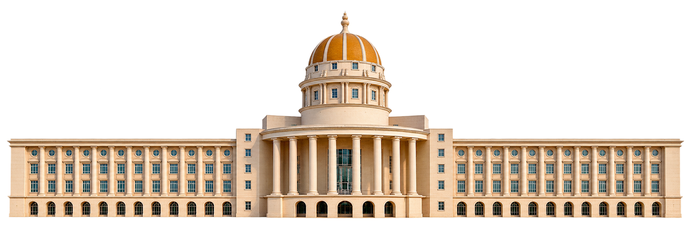

01 / MADE AT MUJ
Meet your
campus again.
The place you know, from a new angle. Scroll to turn the building and see what MUJheky is about.
02 / STAY IN THE LOOP
Marks move.
You don't
have to.
We keep an eye on SLCM and bring the changes to you.


THE TURN / 01—02
SCROLL TO TURN THE CAMPUS ↓